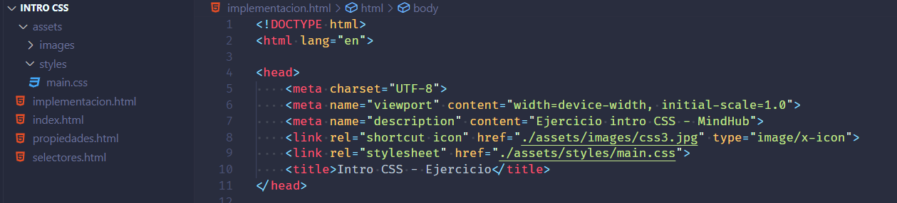
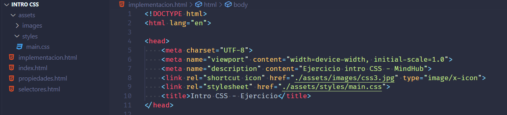
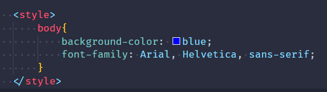
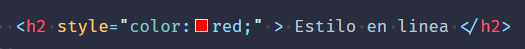

CSS externo
El CSS externo es un método de implementación de CSS que consiste en incorporar un archivo CSS en la página web.
Es la forma recomendada
El CSS externo es un método de implementación de CSS que consiste en incorporar un archivo CSS en la página web.
Es la forma recomendada
El elemento STYLE permite a los autores poner reglas de hojas de estilo en la cabecera del documento. HTML permite cualquier número de elementos STYLE en la sección HEAD de un documento.
El CSS en línea es un método de implementación de CSS que consiste en aplicar estilos CSS directamente a los elementos HTML.
Se utiliza para definir estilos únicos para elementos individuales de una página web.
